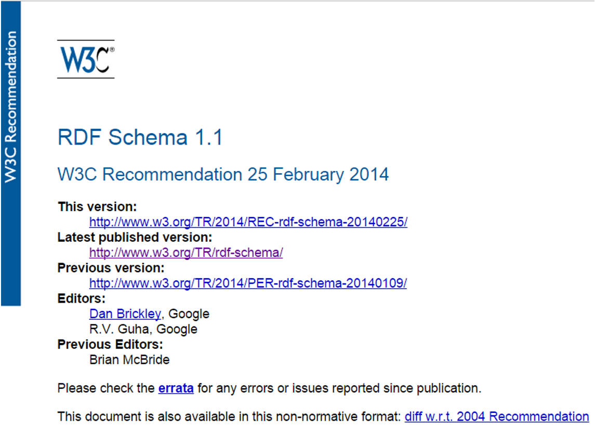
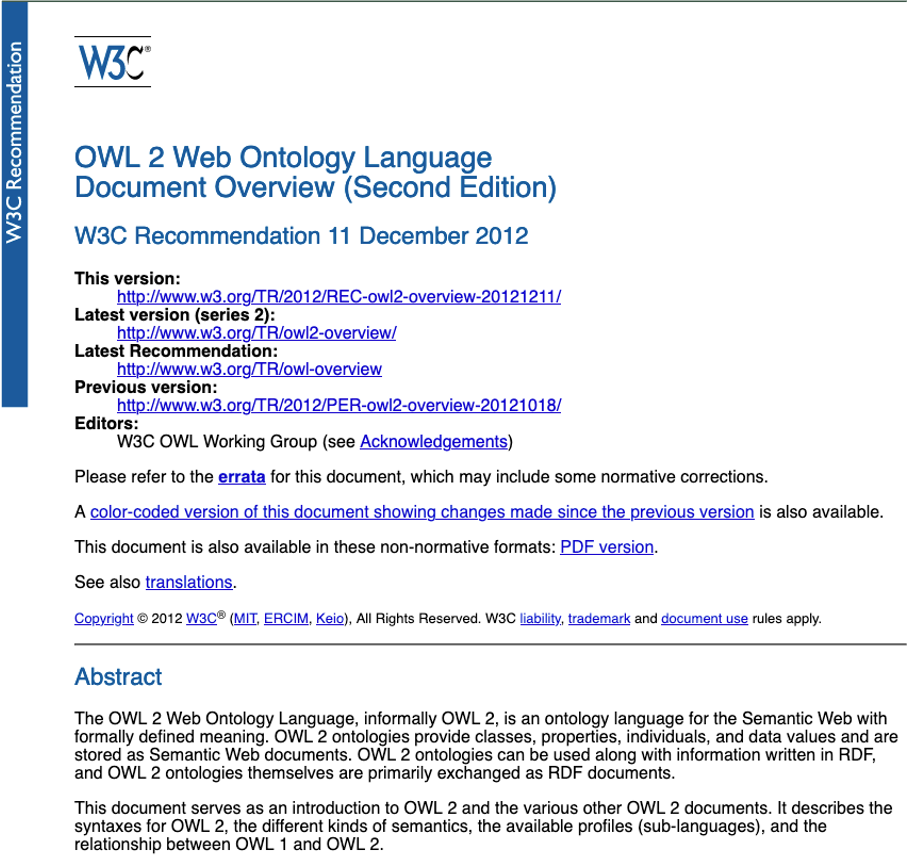
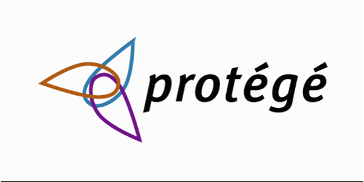

Contexte, histoire et langages avant RDFS et OWL.
Comment une machine peut-elle produire de nouveaux faits, jamais écrits explicitement dans le graphe ?
Le mot "raisonnement" recouvre deux familles de méthodes très différentes.
Applique des règles logiques explicites. Chaque conclusion est garantie correcte si les prémisses le sont. C'est l'objet de ce chapitre.
Prédit des relations probables à partir de motifs observés (embeddings de graphes, modèles de langage). Une probabilité, pas une garantie.
Les deux se complètent : c'est le principe du GraphRAG vu au chapitre 1, un modèle de langage s'appuyant sur des faits garantis par un graphe.
La forme d'inférence la plus ancienne, décrite par Aristote il y a plus de 2000 ans.
La troisième phrase n'a jamais été écrite :
elle est déduite des deux premières.
Le graphe ne contient que des faits assertés. Un moteur de raisonnement peut en tirer davantage.
ex:djokovic ex:aRemporté ex:rg2023. ex:rg2023 ex:surface ex:terreBattue.ex:ChampionTerre.ex:djokovic rdf:type ex:ChampionTerre, sans que ce triplet ait jamais été écrit.L'ensemble des classes et des règles qui rendent cette inférence possible porte un nom : une ontologie.
"Une ontologie est une spécification explicite d'une conceptualisation."Tom Gruber, 1993, la définition la plus citée du domaine.
Dans ce cours, l'ontologie, c'est le vocabulaire RDFS/OWL d'un graphe : ses classes, ses propriétés, ses règles. Les triplets RDF sont les données qui s'appuient dessus.
Beaucoup de vocabulaires RDF se limitent à nommer des classes et des propriétés. Une ontologie, au sens fort, ajoute des règles logiques qu'un raisonneur peut réellement exploiter.
Une hiérarchie de classes (rdfs:subClassOf), peu ou pas de restrictions OWL. Utile pour nommer et indexer, mais un raisonneur n'en tire presque rien de nouveau.
Restrictions, disjonctions, propriétés caractérisées (transitive, fonctionnelle, inverse...). Un raisonneur peut classifier automatiquement et détecter des incohérences.
Le vocabulaire utilisé par Google pour son Knowledge Graph, déjà vu au chapitre 1.
La terminologie clinique de référence, utilisée dans les dossiers médicaux de plus de 50 pays.
OWL EL, pensée dès le départ pour le raisonnement automatique.subClassOf non écrites à la main.OWL 2 DL. Des banques l'utilisent pour classifier automatiquement des instruments financiers complexes et vérifier leur cohérence.Le graphe ne dit rien sur les tournois sur gazon de Djokovic. Faut-il en conclure qu'il n'en a jamais gagné ?
Hypothèse du monde clos. Tout fait absent est considéré faux : une ligne manquante est une réponse en soi.
Hypothèse du monde ouvert. Un fait absent est seulement inconnu : peut être vrai, faux, ou jamais renseigné.
Conséquence directe pour le raisonnement : un moteur qui suit l'OWA ne peut jamais conclure qu'un fait est faux uniquement parce qu'il est absent du graphe.
etu1 est-il inscrit au cours de web_sémantique ?
Non.
On ne sait pas : rien n'affirme le contraire.
ex:djokovic et wd:Q5812 peuvent désigner la même personne, sans qu'un moteur de raisonnement le devine tout seul.owl:sameAs, présenté en détail en section 3.3.À combien de cours etu2 est-il inscrit ?
2, avec certitude.
Au moins 1 : rien n'affirme que web_sémantique et graphes_connaissances sont deux cours distincts.
Ces mécanismes de déduction ne sont pas nés avec le Web : ils héritent d'une longue tradition en logique et en intelligence artificielle. Les réseaux sémantiques (1966) et les frames (1975), vus au chapitre 1, sont les ancêtres directs des langages de raisonnement du Web.
Ranger automatiquement une entité dans la bonne hiérarchie de classes.
Détecter des faits contradictoires dans un graphe.
Répondre à une question avec des faits jamais écrits explicitement.
Un quatrième usage majeur : l'intégration de données provenant de sources hétérogènes, en reliant leurs vocabulaires respectifs par des règles communes.
Une fois les règles définies, à quel moment faut-il les appliquer ?
Calcule tous les faits inférés à l'avance et les stocke dans le graphe. Les requêtes deviennent rapides, mais chaque mise à jour doit tout recalculer.
Ne stocke que les faits assertés. Chaque requête est étendue à la volée avec les règles. Le graphe reste léger, mais chaque requête coûte plus cher.
En anglais : forward chaining pour la matérialisation, backward chaining pour la réécriture de requêtes.
RDFS et OWL occupent deux points différents sur ce compromis, hérité du choix déjà posé au chapitre 1.
Peu expressif, mais son inférence se calcule instantanément, même sur des milliards de triplets.
Beaucoup plus expressif, avec plusieurs profils qui font varier le coût de calcul.
La suite du chapitre présente ces deux langages en détail : RDFS (3.2), puis OWL (3.3).
Structurer le vocabulaire du graphe pour permettre l'inférence.

Source : w3.org/TR/rdf-schema
RDFS ajoute à RDF le vocabulaire minimal pour décrire des classes et des propriétés, et pour en tirer des inférences simples.
rdfs:Class, rdfs:subClassOf, rdfs:subPropertyOf, rdfs:domain, rdfs:range.ex:Person, ex:Match, ex:Tournoi...rdf:type, vu au chapitre 2 : ex:djokovic rdf:type ex:Person.ex:Person rdf:type rdfs:Class.Inutile de l'écrire à la main : dès qu'une classe est utilisée dans un rdf:type, RDFS le déduit automatiquement
(via la règle du rdfs:range vue plus loin).
rdfs:subClassOf : une relation stricteA rdfs:subClassOf B signifie : toute instance de A est nécessairement une instance de B, sans exception.
Une relation d'inclusion stricte entre deux ensembles de ressources, pas une simple association ou un rapprochement thématique.
subClassOf, ce qui ne l'est pasex:GrandChelem rdfs:subClassOf ex:Tournoi. Tout Grand Chelem est bien un tournoi.
ex:Set rdfs:subClassOf ex:Match. Un set n'est pas une sorte de match : il en est une partie.
"Plus large" ou "fait partie de" ne suffisent pas : seule une véritable relation de généralisation justifie subClassOf.
Chaque classe plus spécifique est entièrement contenue dans la classe plus générale.
rdfs:subPropertyOf : organiser les propriétésP rdfs:subPropertyOf Q signifie : tout triplet utilisant P entraîne le même triplet avec Q.
Le même principe que subClassOf, appliqué aux relations plutôt qu'aux classes.
rdfs:domain et rdfs:rangeex:Person peut ex:aRemporté quelque chose.ex:aRemporté est toujours un ex:Match.Six règles suffisent à couvrir l'essentiel de ce que RDFS permet de déduire.
| Règle | Prémisses | Conclusion |
|---|---|---|
Transitivité de subClassOf |
A subClassOf B.B subClassOf C |
A subClassOf C |
| Héritage de type | X rdf:type A.A subClassOf B |
X rdf:type B |
Transitivité de subPropertyOf |
P subPropertyOf Q.Q subPropertyOf R |
P subPropertyOf R |
| Héritage de triplet | X P Y.P subPropertyOf Q |
X Q Y |
domain |
P domain C.X P Y |
X rdf:type C |
range |
P range C.X P Y |
Y rdf:type C |
À vous de les appliquer, une par une, sur les slides suivantes.
subClassOfex:MatchSimple rdfs:subClassOf ex:Match .
ex:Match rdfs:subClassOf ex:ÉvénementSportif .Que peut-on en déduire sur ex:MatchSimple ?
ex:MatchSimple rdfs:subClassOf ex:ÉvénementSportif
ex:rg2024_finale a ex:MatchSimple .
ex:MatchSimple rdfs:subClassOf ex:Match .Que peut-on en déduire sur ex:rg2024_finale ?
ex:rg2024_finale a ex:Match .
subPropertyOfex:aRemporté rdfs:subPropertyOf ex:aJoué .
ex:aJoué rdfs:subPropertyOf ex:aParticipéÀ .Que peut-on en déduire sur ex:aRemporté ?
ex:aRemporté rdfs:subPropertyOf ex:aParticipéÀ .
ex:djokovic ex:aRemporté ex:rg2023 .
ex:aRemporté rdfs:subPropertyOf ex:aJoué .Que peut-on en déduire sur ex:djokovic ?
ex:djokovic ex:aJoué ex:rg2023 .
domainex:aRemporté rdfs:domain ex:Person .
ex:djokovic ex:aRemporté ex:rg2023 .Que peut-on en déduire sur ex:djokovic ?
ex:djokovic a ex:Person .
rangeex:aRemporté rdfs:range ex:Match .
ex:djokovic ex:aRemporté ex:rg2023 .Que peut-on en déduire sur ex:rg2023 ?
ex:rg2023 a ex:Match .
RDFS ne rejette jamais un triplet. Il ne fait qu'en déduire d'autres, même absurdes.
Turtleex:aRemporté rdfs:domain ex:Person ;
rdfs:range ex:Match .
ex:court_chatrier ex:aRemporté ex:alcaraz .Un raisonneur RDFS déduit ex:court_chatrier a ex:Person et ex:alcaraz a ex:Match : un court devenu une personne, un joueur devenu un match, sans jamais signaler le problème.
Conséquence directe de l'hypothèse du monde ouvert (OWA), vue en 3.1.
Six règles simples, calculables en une seule passe, même sur des milliards de triplets. Aucune ambiguïté de calcul.
Aucun mécanisme de validation. Une donnée mal saisie produit une inférence silencieuse plutôt qu'une erreur.
Pour valider réellement un graphe, et rejeter les données incorrectes, il faut un langage de contraintes comme SHACL, hors du champ de RDFS et OWL.
D'autres termes existent, mais sans pouvoir d'inférence : ils documentent le graphe plutôt qu'ils ne le structurent.
rdfs:label, rdfs:comment, rdfs:seeAlso, rdfs:isDefinedBy : lisibles par un humain, ignorés par un raisonneur.rdfs:Resource, rdfs:Literal, rdfs:Datatype, le vocabulaire des conteneurs (rdfs:member...) : présents dans le standard, peu présents en pratique.Six règles suffisent pour une hiérarchie simple, mais RDFS ne peut exprimer aucune de ces idées :
ex:MatchSimple ne peut jamais être aussi un ex:MatchDouble.OWL comble ces manques, section 3.3.
Ce qui a été vu en 3.2 n'est que la partie émergée de ce qu'un langage de raisonnement peut exprimer.
Les constructions les plus utiles, pas le langage entier.

Source : w3.org/TR/owl2-overview
OWL comble les manques de RDFS identifiés en 3.2, et ajoute la possibilité de raisonner sur l'identité des entités. Trois blocs structurent cette section.
owl:sameAs ou owl:differentFrom.OWL est un langage vaste. Cette section couvre seulement ses constructions les plus utiles en pratique.
Donner un comportement logique aux relations du graphe.
N'importe quelle propriété métier peut être déclarée transitive, pas seulement subClassOf et subPropertyOf vus en 3.2.
ex:estSituéDans a owl:TransitiveProperty .
ex:court_chatrier ex:estSituéDans ex:paris .
ex:paris ex:estSituéDans ex:france .→ On en déduit ex:court_chatrier ex:estSituéDans ex:france.
owl:SymmetricPropertyUne relation qui vaut toujours dans les deux sens.
Turtleex:aJouéContre a owl:SymmetricProperty .
ex:djokovic ex:aJouéContre ex:alcaraz .→ On en déduit ex:alcaraz ex:aJouéContre ex:djokovic.
owl:AsymmetricPropertyL'opposé exact de la symétrie : si la relation est vraie dans un sens, elle est nécessairement fausse dans l'autre.
Turtleex:pèreDe a owl:AsymmetricProperty .
ex:sebastian_nadal ex:pèreDe ex:rafael_nadal .↛ ex:rafael_nadal ex:pèreDe ex:sebastian_nadal
ne peut pas être vrai en même temps : Rafael ne peut pas être le père de son propre père.
owl:ReflexivePropertyToute ressource est liée à elle-même par cette propriété, même sans l'écrire.
Turtleex:aMêmeNationalitéQue a owl:ReflexiveProperty .→ On en déduit ex:djokovic ex:aMêmeNationalitéQue ex:djokovic, pour absolument tout le monde. Le même principe que la réflexivité de owl:sameAs, vue en 3.3.2, mais applicable à n'importe quelle propriété.
owl:IrreflexivePropertyL'opposé exact de la réflexivité : aucune ressource ne peut être liée à elle-même par cette propriété.
Turtleex:aBattu a owl:IrreflexiveProperty .↛ ex:djokovic ex:aBattu ex:djokovic est impossible : un joueur ne peut pas se battre lui-même.
Un graphe est incohérent quand il affirme, directement ou par inférence, deux faits qu'aucune interprétation ne peut satisfaire ensemble.
Turtleex:pèreDe a owl:AsymmetricProperty .
ex:sebastian_nadal ex:pèreDe ex:rafael_nadal .
ex:rafael_nadal ex:pèreDe ex:sebastian_nadal .↛ Contradiction directe : les deux triplets ne peuvent pas être vrais en même temps.
D'autres violations produisent le même effet : une propriété irréflexive utilisée sur soi-même, une cardinalité dépassée, deux classes disjointes partageant une instance.
owl:inverseOfDéclare que deux propriétés décrivent la même relation, vue depuis chaque extrémité.
Turtleex:aRemporté owl:inverseOf ex:remportéPar .
ex:djokovic ex:aRemporté ex:rg2023 .→ On en déduit ex:rg2023 ex:remportéPar ex:djokovic.
Un sujet ne peut avoir qu'une seule valeur pour cette propriété.
Turtleex:dateNaissance a owl:FunctionalProperty .
ex:djokovic ex:dateNaissance "1987-05-22"^^xsd:date .↛ Une seconde date de naissance pour ex:djokovic contredirait cette déclaration.
Une valeur ne peut appartenir qu'à un seul sujet : elle identifie ce sujet de façon unique.
Turtleex:numeroLicence a owl:InverseFunctionalProperty .
ex:djokovic ex:numeroLicence "ATP-12345" .
ex:joueur_x ex:numeroLicence "ATP-12345" .→ Même numéro de licence, donc même joueur : on en déduit ex:djokovic owl:sameAs ex:joueur_x.
Décider quand deux IRIs désignent la même entité.
owl:sameAs : la même chose, deux nomsDéclare explicitement que deux IRIs désignent la même entité du monde réel, la solution à l'absence d'UNA vue en 3.1.
Turtle@prefix ex: <http://example.org/> .
@prefix wd: <http://www.wikidata.org/entity/> .
@prefix owl: <http://www.w3.org/2002/07/owl#> .
ex:djokovic owl:sameAs wd:Q5812 .→ ex:djokovic (notre graphe) et wd:Q5812 (Wikidata) désignent la même personne.
sameAs : l'impact sur l'exemple universitaireRappel de 3.1 : sans le savoir, etu2 était inscrit à "au moins 1" cours, faute de savoir si web_sémantique et graphes_connaissances sont un seul et même cours.
ex:web_sémantique owl:sameAs ex:graphes_connaissances .Les deux noms fusionnent en un seul cours. Sous l'OWA, rien n'exclut d'autres inscriptions non renseignées : "exactement 1" resterait une conclusion abusive.
sameAssameAs B et B sameAs C, alors A sameAs C.sameAs B, alors B sameAs A.sameAs A est toujours vrai, même sans l'écrire.owl:differentFrom affirme au contraire que deux IRIs désignent des entités distinctes.differentFrom : l'impact sur l'exemple universitaireLa déclaration inverse résout l'incertitude dans l'autre sens.
ex:web_sémantique owl:differentFrom ex:graphes_connaissances .Les deux cours sont désormais garantis distincts. Sous l'OWA, rien n'exclut d'autres inscriptions non renseignées : "exactement 2" resterait une conclusion abusive.
sameAs n'est pas "ressemble à"Deux joueurs distincts qui partagent un nom de famille ne sont pas la même personne.
ex:williams_serena owl:sameAs ex:williams_venus. Deux sœurs, deux personnes, deux IRIs distincts : ce n'est pas une question de ressemblance ou de similarité.
À cause de la transitivité, une seule erreur de sameAs fusionne silencieusement deux entités, et tout ce qu'on sait sur elles.
owl:equivalentClassCe que owl:sameAs fait pour deux individus, owl:equivalentClass le fait pour deux classes : elles décrivent exactement le même ensemble de ressources.
@prefix foaf: <http://xmlns.com/foaf/0.1/> .
ex:Person owl:equivalentClass foaf:Person .→ Toute instance de ex:Person est aussi une instance de foaf:Person, et inversement.
owl:equivalentPropertyEt au niveau des propriétés : deux propriétés de vocabulaires différents qui expriment exactement la même relation.
Turtle@prefix foaf: <http://xmlns.com/foaf/0.1/> .
ex:name owl:equivalentProperty foaf:name .→ ex:alcaraz ex:name "Carlos Alcaraz" entraîne aussi ex:alcaraz foaf:name "Carlos Alcaraz".
Contraindre, combiner et aligner les classes du graphe.
owl:Thing et owl:NothingSi un raisonneur déduit qu'une ressource appartient à owl:Nothing, le graphe est incohérent : le même phénomène que la violation de propriété vue en 3.3.1, mais au niveau des classes.
owl:disjointWithDeux classes disjointes n'ont jamais d'instance en commun, l'inverse exact de la hiérarchie emboîtée vue en 3.2.
ex:MatchSimple owl:disjointWith ex:MatchDouble .Un match à la fois MatchSimple et MatchDouble deviendrait une instance de owl:Nothing : le graphe serait incohérent.
owl:intersectionOfUne nouvelle classe définie comme l'ensemble des ressources qui appartiennent à toutes les classes listées à la fois.
ex:ChampionGaucher a owl:Class ;
owl:intersectionOf ( ex:Gaucher ex:ChampionGrandChelem ) .→ La syntaxe ( ... ) est le raccourci Turtle pour les listes, vu en 2.3.
owl:unionOfUne nouvelle classe définie comme l'ensemble des ressources qui appartiennent à au moins une des classes listées.
ex:VainqueurMajeur a owl:Class ;
owl:unionOf ( ex:VainqueurRolandGarros ex:VainqueurWimbledon ) .owl:complementOfUne nouvelle classe définie comme tout ce qui n'appartient pas à la classe donnée.
ex:NonChampion a owl:Class ;
owl:complementOf ex:Champion .Modéliser et raisonner sur des joueurs et des entraîneurs avec un éditeur d'ontologies.

Des joueurs, des entraîneurs, un classement : de quoi tester RDFS et OWL ensemble.
Une hiérarchie RDFS, complétée par une disjonction OWL.
Turtleex:Joueur rdfs:subClassOf ex:Personne .
ex:Entraineur rdfs:subClassOf ex:Personne .
ex:Joueur owl:disjointWith ex:Entraineur .→ Dans cette ontologie, personne ne peut être à la fois ex:Joueur et ex:Entraineur.
ex:entraine et ex:aCommeEntraineurDeux propriétés inverses l'une de l'autre, vues en 3.3.1.
Turtleex:entraine owl:inverseOf ex:aCommeEntraineur .ex:aClasséAuDessusDe : une propriété transitiveSi un joueur est classé au-dessus d'un deuxième, lui-même classé au-dessus d'un troisième, le premier est classé au-dessus du troisième.
Turtleex:aClasséAuDessusDe a owl:TransitiveProperty .ex:aJouéContre : une propriété symétriqueex:aJouéContre a owl:SymmetricProperty .ex:aCommeEntraineurPrincipal : une propriété fonctionnelleUn joueur n'a qu'un seul entraîneur principal à la fois.
Turtleex:aCommeEntraineurPrincipal a owl:FunctionalProperty .Les seuls faits assertés. Tout le reste sera déduit par le raisonneur.
Turtleex:rafael_nadal a ex:Joueur . ex:toni_nadal a ex:Entraineur .
ex:djokovic a ex:Joueur . ex:carlos_moya a ex:Entraineur .
ex:alcaraz a ex:Joueur .
ex:zverev a ex:Joueur .
ex:toni_nadal ex:entraine ex:rafael_nadal .
ex:djokovic ex:aJouéContre ex:alcaraz .
ex:djokovic ex:aClasséAuDessusDe ex:alcaraz .
ex:alcaraz ex:aClasséAuDessusDe ex:zverev .
ex:rafael_nadal ex:aCommeEntraineurPrincipal ex:toni_nadal .ex:toni_nadal ex:entraine ex:rafael_nadal .Que peut-on en déduire sur ex:rafael_nadal ?
ex:rafael_nadal ex:aCommeEntraineur ex:toni_nadal .
ex:djokovic ex:aJouéContre ex:alcaraz .Que peut-on en déduire sur ex:alcaraz ?
ex:alcaraz ex:aJouéContre ex:djokovic .
Aucun triplet ne relie directement ex:djokovic à ex:zverev.
ex:djokovic ex:aClasséAuDessusDe ex:alcaraz .
ex:alcaraz ex:aClasséAuDessusDe ex:zverev .Que peut-on en déduire ?
ex:djokovic ex:aClasséAuDessusDe ex:zverev .
La transitivité seule suffit, sans passer par une règle RDFS intermédiaire.
Historiquement, Toni Nadal puis Carlos Moyá ont tous deux été présentés comme l'entraîneur principal de Rafael Nadal.
Turtleex:rafael_nadal ex:aCommeEntraineurPrincipal ex:toni_nadal .
ex:rafael_nadal ex:aCommeEntraineurPrincipal ex:carlos_moya .ex:aCommeEntraineurPrincipal est fonctionnelle. Que peut-on en déduire ?
ex:toni_nadal owl:sameAs ex:carlos_moya .
Sans owl:differentFrom pour les séparer, le raisonneur fusionne deux entraîneurs bien réels et bien distincts en une seule personne.
Le raisonnement dérive de nouveaux faits à partir de faits existants et de règles, sans qu'un humain les écrive. Sous l'hypothèse du monde ouvert (OWA), un fait absent est seulement inconnu, jamais faux.
RDFS structure le vocabulaire avec six règles simples (subClassOf, subPropertyOf, domain, range), calculables en une seule passe, même sur des milliards de triplets.
domain et range ne valident rien : ce sont des règles d'inférence, pas des contraintes. Une donnée mal saisie produit une inférence silencieuse, jamais une erreur.
Le raisonnement se matérialise à l'avance ou se recalcule à la volée à chaque requête. Il sert à classer, détecter les incohérences, enrichir les réponses et intégrer des données hétérogènes.
OWL ajoute des caractéristiques de propriétés (transitive, symétrique, réflexive, et leurs opposés) et la notion d'identité : owl:sameAs pour les individus, owl:equivalentClass et owl:equivalentProperty pour les classes et les propriétés.
Violer ces règles rend un graphe incohérent (owl:Nothing). Combiner des classes (disjointWith, intersectionOf, unionOf, complementOf) et contraindre leur cardinalité affine encore la modélisation.
RDF décrit les faits. RDFS et OWL en déduisent d'autres. Il reste à savoir interroger tous ces faits, assertés comme inférés : c'est l'objet du chapitre suivant, SPARQL.